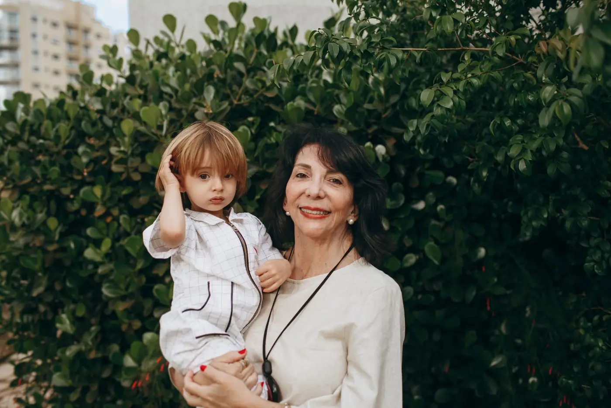

Artigos
Leitura simples sobre os seus direitos no INSS
Textos curtos, com letra grande e sem juridiquês. Leia com calma, mostre para alguém da família e, se ficar alguma dúvida, pergunte ao escritório.
Lista de artigos
Aposentadoria por idade: quem pode pedir depois da Reforma
As idades e o tempo de contribuição mudaram em 2019. Veja, sem complicação, como ficou a aposentadoria por idade na cidade e na roça.
Ler o artigo
Aposentadoria ou BPC: qual é a diferença?
Os dois são pagos pelo INSS, mas são coisas bem diferentes. Entender a diferença evita escolher o caminho errado.
Ler o artigoO que é o CNIS e por que ele importa tanto
O CNIS é o "histórico de trabalho" que o INSS usa para decidir os pedidos. Saiba como tirar o extrato e o que conferir.
Ler o artigoO INSS negou meu pedido. E agora?
Uma carta de indeferimento não é sempre o fim da história. Entenda o que a carta diz e quais caminhos podem existir.
Ler o artigoPensão por morte: quem tem direito e por quanto tempo
Quem são os dependentes, como provar a união estável e por quanto tempo a pensão é paga ao cônjuge.
Ler o artigoNão achou o seu assunto?
Mande a sua pergunta. Respondemos em palavras simples, sem compromisso de contratar.
Perguntar pelo WhatsAppNão achou o que procurava?
Mande a sua pergunta. Respondemos em linguagem simples, sem compromisso de contratar.